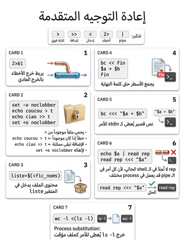

Redirections & scripts
إعادة التوجيه داخل السكربتات
الشرح بالعربية
تذكير: > استبدال، >> إلحاق، 2> للأخطاء، &> للكل. noclobber (set -o noclobber) يمنع الاستبدال وتُكسر بـ >|. << لمستند متعدد الأسطر، و<<< لسطر واحد. الأنابيب داخل السكربتات قد تنشئ sous-shell، لذا استخدم إعادة التوجيه مع read لقراءة ملف سطرًا سطرًا.
Illustrations de la leçon
1 planche · cliquez pour agrandir
Contenu de la leçon
Le cours en français, avec les termes techniques et les exemples.
RAPPEL SUR LES REDIRECTIONS D’ENTRÉE
SORTIE
Un processus
Unix possède par défaut trois voies d’interaction avec l’extérieur appelées entrées / sorties standard.
> fichier :Sortie standard vers un fichier (l’écrase s’il existe)
>> fichier:sortie standard vers la fin d’un fichier
< fichier :entrée standard est un fichier
<< fichier :entrée standard en mode saisie jusqu’à mot de fin
2> fichier : sortie d’erreur vers fichier
2>> fichier : sortie standard à la fin d’un fichier
2>&1 : rediriger la sortie standard pour les messages d’erreur vers la sortie standard cmd1 | cmd2 : sortie de cmd1 est l’entrée de cmd2
RAPPEL SUR LES REDIRECTIONS D’ENTRÉE
SORTIE
Pour éviter que le contenu d’un fichier ne soit écrasé lors d’une redirection, il est possible d’utiliser l’option noclobber de la commande interne set.
Ex : $ cat t bonjour
$ set -o noclobber=> activation de l’option noclobber
$ echo coucou > tbash: t : impossible d’écraser le fichier existant
$ echo ciao >> t$
=> la concaténation reste possible
$ cat t Bonjour ciao$ set +o noclobber=> pour désactiver l’option
REDIRECTIONS ET SCRIPTS : SUBSTITUTION DE
COMMANDE
Une substitution de commande associée à une redirection de l’entrée standard permet d’affecter à une variable le contenu d’un fichier.
En effet, la substitution de commande $(cat fichier) peut être avantageusement remplacée par la syntaxe $(< fichier). Cette deuxième forme est plus rapide.
Ex :
$ cat fic_nomspierre beteille anne debazac julie donet
$
$ liste=$(<fic_noms)$
$ echo $liste=> liste est une variable et non un fichier !
$pierre beteille anne debazac julie donet=> elle contient le contenu du fichier fic_noms
REDIRECTIONS ET SCRIPTS : SUBSTITUTION DE
COMMANDE
Exercice :
Ecrire un programme shell nblignes prenant un nom de fichier en argument et qui affiche le nombre de lignes de ce fichier.
Ex : $ nblignes fich_noms
$
$ nblignes=$( wc -l < fic_noms )$ echo $nblignes=> nombre de lignes
$
REDIRECTIONS ET SCRIPTS
Redirections séparées des entrées / sorties standard
Les entrées / sorties peuvent être redirigées indépendamment les unes des autres.
Ex :
$ wc -l < fic_noms > fic_nblignes 2>err$ cat fic_nblignes$ cat err$
Il est possible de placer les redirections où l'on souhaite car le shell traite les redirections avant d'exécuter la
commande. Ex :
$ < fic_noms > fic_nblignes wc 2>err -l$
$ cat fic_nblignes$
$ cat err$
REDIRECTIONS ET SCRIPTS : TEXTE JOINT
Il existe plusieurs syntaxes légèrement différentes pour passer un texte comme entrée
à une commande. La syntaxe présentée ci-dessous est la plus simple :
cmd << mot texte mot
Ex :
$ a=3.5 b=1.2$
$ bc << Fin> $a + $b
=> la chaîne ">" indique que la commande >
> Fin
=> n’est syntaxiquement pas terminée
7
$
La commande unix bc est une calculatrice utilisable en ligne de commande
REDIRECTIONS ET SCRIPTS : CHAÎNES
JOINTES
Syntaxe :
cmd <<< chaîne
C’est une syntaxe plus compacte que le texte joint :
le contenu transmis à l’entrée standard de la commande cmd se présente sous la forme d’une chaîne de caractères chaîne.
Ex :
$ a=1.2 b=-5.3$
$ bc <<< "$a + $b"-4.1
$
REDIRECTIONS ET SCRIPTS : TUBES ET
CHAÎNES JOINTES
Le shell crée un processus différent pour chaque commande d’un tube cmd1 | cmd2.
Cela provoque l’effet suivant : si cmd2 modifie la valeur d’une variable, cette modification disparaitra avec la fin du processus qui exécute cette commande.
Ex :
$ a=bonjour$ echo $a | read rep# (a)
$ echo $rep=>la variable rep ne contient pas la chaîne bonjour ; elle n’est pas initialisée
$
Pour éviter ça, on place les deux commandes à l’intérieur d’une paire de parenthèses
Ex :
$ echo $a | ( read rep ; echo $rep )bonjour
=> l’affectation à rep a bien été effectuée
$ echo $rep=> > variable rep non initialisée
$
REDIRECTIONS ET SCRIPTS : TUBES ET
CHAÎNES JOINTES
Cela provient du fait qu’il y a deux variables rep différentes :
Une qui est créée et utilisée par le processus qui exécute la commande read rep et une qui est créée et utilisée par le processus qui exécute la commande echo $rep. L’utilisation d’une chaîne jointe permet de résoudre de manière élégante ce problème de transmission de données entre processus.
Ex :
$ read rep <<< "$a"$
$ echo $repbonjour
$
REDIRECTIONS ET SCRIPTS : SUBSTITUTION
DE PROCESSUS
La substitution de processus généralise la notion de tube. La principale forme de
substitution de processus est la suivante :
cmd <(suite_cmds)
Le shell crée un fichier temporaire, connecte la sortie de suite_cmds à ce fichier temporaire puis lance l’exécution de cette suite de commandes.
Ex :
$ ls -ltotal 8
-rw-rw-r-- 1 sanchis sanchis 140 mars 31 10:29 err
-rw-rw-r-- 1 sanchis sanchis 0 mars 31 10:26 f
-rw-r--r-- 1 sanchis sanchis 156 mars 31 10:30 trace
$ wc -l <(ls -l)4 /dev/fd/63
=> la commande ls –l affiche 4 lignes
$
Dans l’exemple ci-dessus, la sortie de la commande ls –l a été enregistrée dans un fichier temporaire /dev/fd/63. Puis, la commande wc –l /dev/fd/63 a été exécutée.